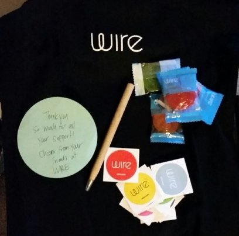

Exploiting Window.opener
The Problem
One of the most common security oversights in web development is using target='_blank' on links, or window.open() in JavaScript for 3rd party links.
Not using rel="noopener noreferrer" (or otherwise nulling the opener), makes any opened tabs - even cross origin - able to control the URL location of the opener tab, and since a user’s attention immediately jumps to the new tab, they probably will not notice that their first tab is now a phishing page.
In my opinion, intentionally ignoring this issue isn’t a big deal, but it is a simple fix in most cases, and should be done in order to provide some protection for users against potential phishing attacks that use this vector.
Popular Search Engines Are Vulnerable
Although I am definitely not the first to check search engines, many popular ones are/were vulnerable, including Google, who won’t fix it.
As of writing this, if someone searches ‘ChaosWebs.net’ on Google, and they have ‘open links in a new tab’ set in their search settings, their Google tab will also be redirected to my website. If I was malicious, I could take them to a phishing page.
However, some other search engines, specifically DuckDuckGo and StartPage recognized this as a security oversight. DuckDuckGo has since deployed a fix, and StartPage even paid out a $75 reward.
StartPage asked me to clarify that they do not consider it a vulnerability, especially in their case.
Email Clients Are Vulnerable
Unsurprisingly, many web based email clients are vulnerable (although strangely GMail protects against it - make up your mind, Google!).
I reported the issue to Tutanota who quickly fixed the issue, and even made a public statement about it, thanking me. (Thanks!)
Instant Messengers Are Vulnerable
My first thought was to test web.telegram.org, Telegram's web client, since I use Telegram for messaging daily. Of course, it too was vulnerable. I sent a report to Telegram, they thanked me and, very surprisingly, paid out ~$1600. (Thanks!)
I also tested the web app version of instant messenger Wire, and it too was vulnerable. They sent me a nice goodie bag. (Thanks!)

Conclusion
Countless websites have this problem, even this very blog did (as it was running Hexo). This is probably up there with SQL injection in terms of frequently ignored best programming practices.
I don’t understand why companies like Google are choosing to ignore it, I don’t think it is necessarily worth paying bug bounties over (Not that I’m complaining about the ones I received!), but I do think that it is irresponsible to flat out ignore the problem, especially on somewhat sensitive websites.